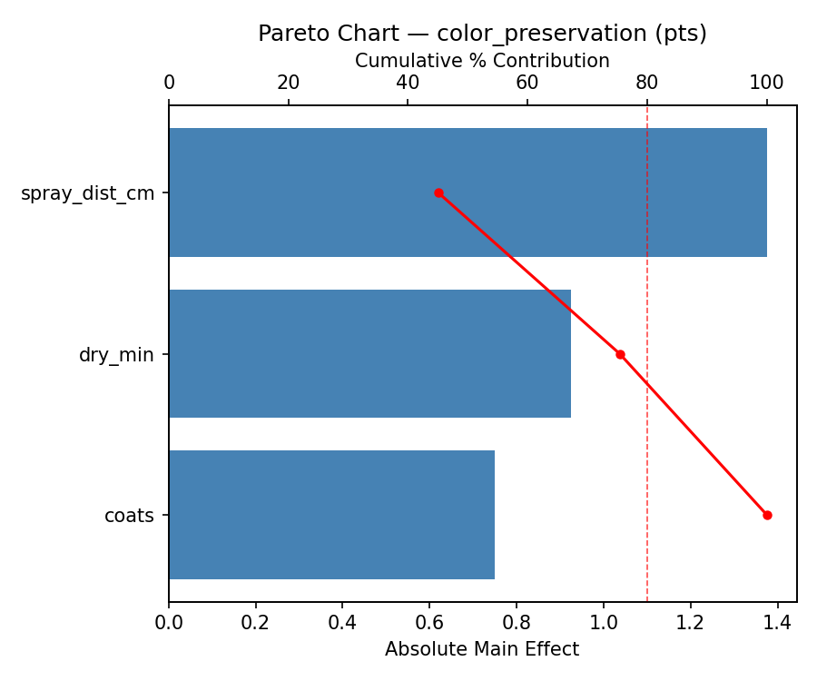
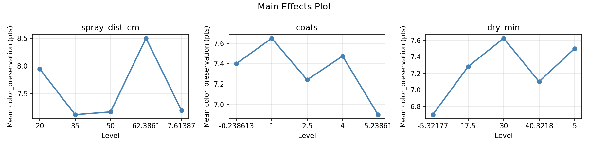
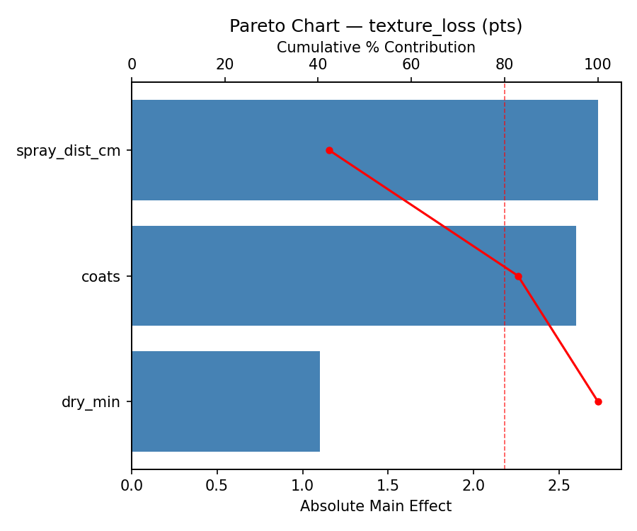
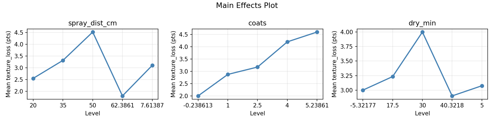
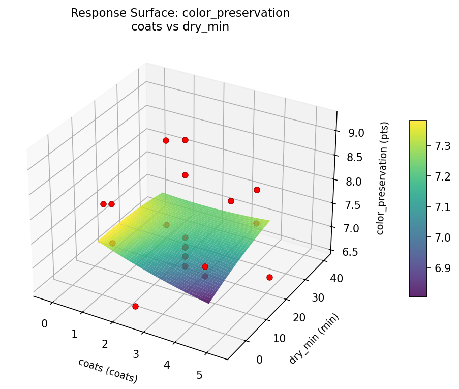
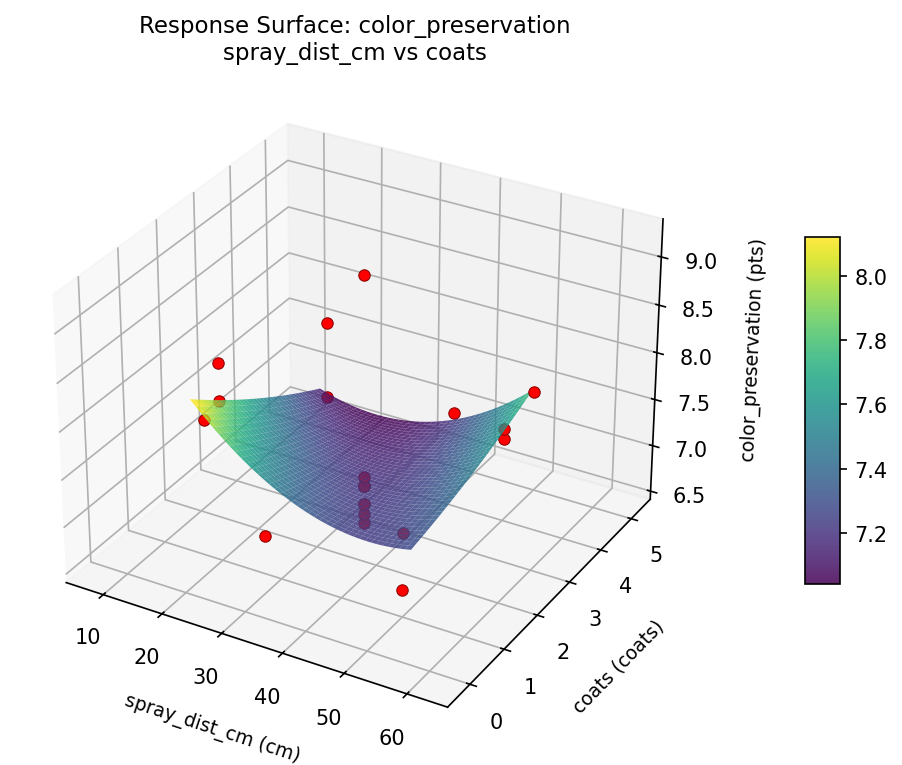
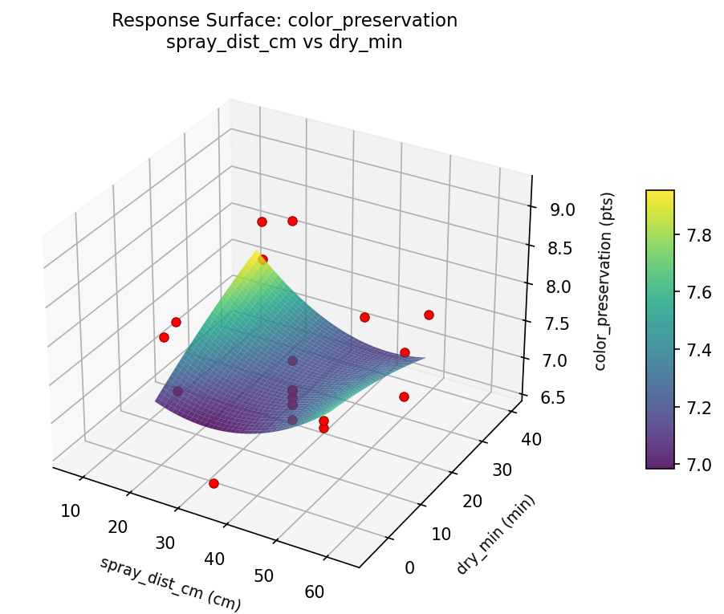
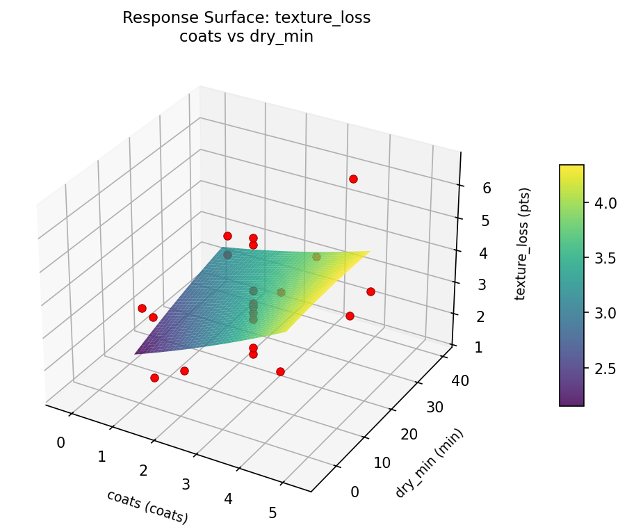
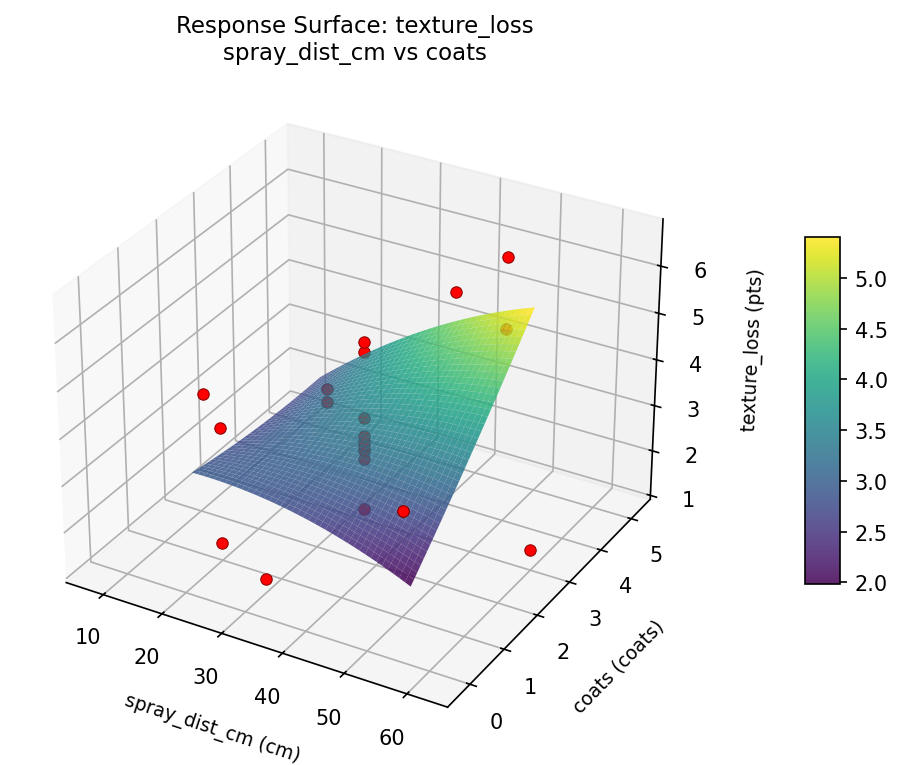
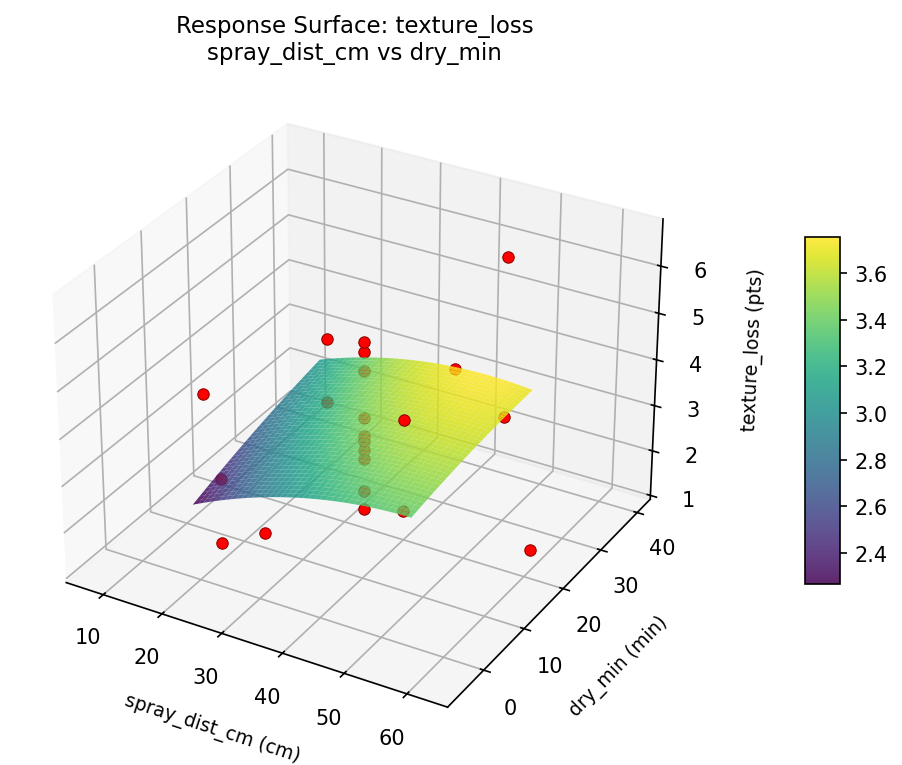

Summary
This experiment investigates pastel fixative application. Central composite design to maximize color preservation and minimize texture loss by tuning spray distance, number of coats, and drying interval.
The design varies 3 factors: spray dist cm (cm), ranging from 20 to 50, coats (coats), ranging from 1 to 4, and dry min (min), ranging from 5 to 30. The goal is to optimize 2 responses: color preservation (pts) (maximize) and texture loss (pts) (minimize). Fixed conditions held constant across all runs include fixative = workable, brand = krylon.
A Central Composite Design (CCD) was selected to fit a full quadratic response surface model, including curvature and interaction effects. With 3 factors this produces 22 runs including center points and axial (star) points that extend beyond the factorial range.
Quadratic response surface models were fitted to capture potential curvature and factor interactions. The RSM contour plots below visualize how pairs of factors jointly affect each response.
Key Findings
For color preservation, the most influential factors were spray dist cm (45.1%), dry min (30.3%), coats (24.6%). The best observed value was 9.2 (at spray dist cm = 35, coats = 5.23861, dry min = 17.5).
For texture loss, the most influential factors were spray dist cm (42.4%), coats (40.5%), dry min (17.1%). The best observed value was 1.3 (at spray dist cm = 35, coats = 2.5, dry min = 17.5).
Recommended Next Steps
- Run confirmation experiments at the predicted optimal settings to validate the model.
- Consider whether any fixed factors should be varied in a future study.
Experimental Setup
Factors
| Factor | Low | High | Unit |
|---|
spray_dist_cm | 20 | 50 | cm |
coats | 1 | 4 | coats |
dry_min | 5 | 30 | min |
Fixed: fixative = workable, brand = krylon
Responses
| Response | Direction | Unit |
|---|
color_preservation | ↑ maximize | pts |
texture_loss | ↓ minimize | pts |
Configuration
{
"metadata": {
"name": "Pastel Fixative Application",
"description": "Central composite design to maximize color preservation and minimize texture loss by tuning spray distance, number of coats, and drying interval"
},
"factors": [
{
"name": "spray_dist_cm",
"levels": [
"20",
"50"
],
"type": "continuous",
"unit": "cm"
},
{
"name": "coats",
"levels": [
"1",
"4"
],
"type": "continuous",
"unit": "coats"
},
{
"name": "dry_min",
"levels": [
"5",
"30"
],
"type": "continuous",
"unit": "min"
}
],
"fixed_factors": {
"fixative": "workable",
"brand": "krylon"
},
"responses": [
{
"name": "color_preservation",
"optimize": "maximize",
"unit": "pts"
},
{
"name": "texture_loss",
"optimize": "minimize",
"unit": "pts"
}
],
"settings": {
"operation": "central_composite",
"test_script": "use_cases/286_pastel_fixative/sim.sh"
}
}
Experimental Matrix
The Central Composite Design produces 22 runs. Each row is one experiment with specific factor settings.
| Run | spray_dist_cm | coats | dry_min |
|---|
| 1 | 35 | 2.5 | 17.5 |
| 2 | 50 | 1 | 30 |
| 3 | 20 | 4 | 5 |
| 4 | 35 | 5.23861 | 17.5 |
| 5 | 35 | 2.5 | 17.5 |
| 6 | 7.61387 | 2.5 | 17.5 |
| 7 | 35 | 2.5 | -5.32177 |
| 8 | 35 | 2.5 | 17.5 |
| 9 | 50 | 4 | 5 |
| 10 | 62.3861 | 2.5 | 17.5 |
| 11 | 35 | 2.5 | 17.5 |
| 12 | 35 | -0.238613 | 17.5 |
| 13 | 35 | 2.5 | 17.5 |
| 14 | 20 | 1 | 30 |
| 15 | 35 | 2.5 | 17.5 |
| 16 | 50 | 1 | 5 |
| 17 | 35 | 2.5 | 40.3218 |
| 18 | 50 | 4 | 30 |
| 19 | 35 | 2.5 | 17.5 |
| 20 | 20 | 1 | 5 |
| 21 | 20 | 4 | 30 |
| 22 | 35 | 2.5 | 17.5 |
Step-by-Step Workflow
1
Preview the design
$ python doe.py info --config use_cases/286_pastel_fixative/config.json
2
Generate the runner script
$ python doe.py generate --config use_cases/286_pastel_fixative/config.json \
--output use_cases/286_pastel_fixative/results/run.sh --seed 42
3
Execute the experiments
$ bash use_cases/286_pastel_fixative/results/run.sh
4
Analyze results
$ python doe.py analyze --config use_cases/286_pastel_fixative/config.json
5
Get optimization recommendations
$ python doe.py optimize --config use_cases/286_pastel_fixative/config.json
6
Generate the HTML report
$ python doe.py report --config use_cases/286_pastel_fixative/config.json \
--output use_cases/286_pastel_fixative/results/report.html
Features Exercised
| Feature | Value |
|---|
| Design type | central_composite |
| Factor types | continuous (all 3) |
| Arg style | double-dash |
| Responses | 2 (color_preservation ↑, texture_loss ↓) |
| Total runs | 22 |
Analysis Results
Generated from actual experiment runs using the DOE Helper Tool.
Response: color_preservation
Top factors: spray_dist_cm (45.1%), dry_min (30.3%), coats (24.6%).
Pareto Chart

Main Effects Plot

Response: texture_loss
Top factors: spray_dist_cm (42.4%), coats (40.5%), dry_min (17.1%).
Pareto Chart

Main Effects Plot

Response Surface Plots
3D surfaces fitted with quadratic RSM. Red dots are observed data points.
color preservation coats vs dry min

color preservation spray dist cm vs coats

color preservation spray dist cm vs dry min

texture loss coats vs dry min

texture loss spray dist cm vs coats

texture loss spray dist cm vs dry min

Full Analysis Output
RSM surface: rsm_color_preservation_spray_dist_cm_vs_coats.png
RSM surface: rsm_color_preservation_spray_dist_cm_vs_dry_min.png
RSM surface: rsm_color_preservation_coats_vs_dry_min.png
RSM surface: rsm_texture_loss_spray_dist_cm_vs_coats.png
RSM surface: rsm_texture_loss_spray_dist_cm_vs_dry_min.png
RSM surface: rsm_texture_loss_coats_vs_dry_min.png
=== Main Effects: color_preservation ===
Factor Effect Std Error % Contribution
--------------------------------------------------------------
spray_dist_cm 1.3750 0.1462 45.1%
dry_min 0.9250 0.1462 30.3%
coats 0.7500 0.1462 24.6%
=== Summary Statistics: color_preservation ===
spray_dist_cm:
Level N Mean Std Min Max
------------------------------------------------------------
20 4 7.9500 0.5447 7.2000 8.5000
35 12 7.1250 0.6851 6.6000 9.2000
50 4 7.1750 0.3202 6.7000 7.4000
62.3861 1 8.5000 0.0000 8.5000 8.5000
7.61387 1 7.2000 0.0000 7.2000 7.2000
coats:
Level N Mean Std Min Max
------------------------------------------------------------
-0.238613 1 7.4000 0.0000 7.4000 7.4000
1 4 7.6500 0.8062 6.7000 8.5000
2.5 12 7.2417 0.7845 6.6000 9.2000
4 4 7.4750 0.3594 7.2000 8.0000
5.23861 1 6.9000 0.0000 6.9000 6.9000
dry_min:
Level N Mean Std Min Max
------------------------------------------------------------
-5.32177 1 6.7000 0.0000 6.7000 6.7000
17.5 12 7.2833 0.7732 6.6000 9.2000
30 4 7.6250 0.7890 6.7000 8.5000
40.3218 1 7.1000 0.0000 7.1000 7.1000
5 4 7.5000 0.4082 7.2000 8.1000
=== Main Effects: texture_loss ===
Factor Effect Std Error % Contribution
--------------------------------------------------------------
spray_dist_cm 2.7250 0.2773 42.4%
coats 2.6000 0.2773 40.5%
dry_min 1.1000 0.2773 17.1%
=== Summary Statistics: texture_loss ===
spray_dist_cm:
Level N Mean Std Min Max
------------------------------------------------------------
20 4 2.5500 1.0279 1.3000 3.8000
35 12 3.3167 1.1150 1.6000 5.2000
50 4 4.5250 1.6480 3.2000 6.6000
62.3861 1 1.8000 0.0000 1.8000 1.8000
7.61387 1 3.1000 0.0000 3.1000 3.1000
coats:
Level N Mean Std Min Max
------------------------------------------------------------
-0.238613 1 2.0000 0.0000 2.0000 2.0000
1 4 2.8750 1.0874 1.3000 3.8000
2.5 12 3.1750 1.0618 1.6000 5.2000
4 4 4.2000 2.0050 2.4000 6.6000
5.23861 1 4.6000 0.0000 4.6000 4.6000
dry_min:
Level N Mean Std Min Max
------------------------------------------------------------
-5.32177 1 3.0000 0.0000 3.0000 3.0000
17.5 12 3.2333 1.1934 1.6000 5.2000
30 4 4.0000 1.8257 2.4000 6.6000
40.3218 1 2.9000 0.0000 2.9000 2.9000
5 4 3.0750 1.5714 1.3000 5.1000
Pareto chart (color_preservation): use_cases/286_pastel_fixative/results/analysis/pareto_color_preservation.png
Pareto chart (texture_loss): use_cases/286_pastel_fixative/results/analysis/pareto_texture_loss.png
Main effects (color_preservation): use_cases/286_pastel_fixative/results/analysis/main_effects_color_preservation.png
Main effects (texture_loss): use_cases/286_pastel_fixative/results/analysis/main_effects_texture_loss.png
Optimization Recommendations
=== Optimization: color_preservation ===
Direction: maximize
Best observed run: #12
spray_dist_cm = 35
coats = 5.23861
dry_min = 17.5
Value: 9.2
RSM Model (linear, R² = 0.1311, Adj R² = -0.0137):
Coefficients:
intercept +7.3500
spray_dist_cm +0.1411
coats +0.2578
dry_min +0.0433
RSM Model (quadratic, R² = 0.4284, Adj R² = -0.0003):
Coefficients:
intercept +7.4132
spray_dist_cm +0.1411
coats +0.2578
dry_min +0.0433
spray_dist_cm*coats +0.0500
spray_dist_cm*dry_min +0.1500
coats*dry_min +0.3750
spray_dist_cm^2 -0.1816
coats^2 +0.1784
dry_min^2 -0.0916
Curvature analysis:
spray_dist_cm coef=-0.1816 concave (has a maximum)
coats coef=+0.1784 convex (has a minimum)
dry_min coef=-0.0916 negligible curvature
Notable interactions:
coats*dry_min coef=+0.3750 (synergistic)
Predicted optimum (from quadratic model):
spray_dist_cm = 35
coats = 5.23861
dry_min = 17.5
Predicted value: 8.4787
Model quality: Weak fit — consider adding center points or using a different design.
Factor importance:
1. coats (effect: 2.4, contribution: 61.1%)
2. spray_dist_cm (effect: 1.1, contribution: 27.4%)
3. dry_min (effect: 0.5, contribution: 11.5%)
=== Optimization: texture_loss ===
Direction: minimize
Best observed run: #2
spray_dist_cm = 35
coats = 2.5
dry_min = 17.5
Value: 1.3
RSM Model (linear, R² = 0.0386, Adj R² = -0.1216):
Coefficients:
intercept +3.3182
spray_dist_cm -0.1885
coats -0.2081
dry_min +0.1215
RSM Model (quadratic, R² = 0.3061, Adj R² = -0.2143):
Coefficients:
intercept +3.2656
spray_dist_cm -0.1885
coats -0.2081
dry_min +0.1215
spray_dist_cm*coats +0.5500
spray_dist_cm*dry_min -0.1250
coats*dry_min -0.0500
spray_dist_cm^2 +0.4713
coats^2 -0.2787
dry_min^2 -0.1137
Curvature analysis:
spray_dist_cm coef=+0.4713 convex (has a minimum)
coats coef=-0.2787 concave (has a maximum)
dry_min coef=-0.1137 concave (has a maximum)
Notable interactions:
spray_dist_cm*coats coef=+0.5500 (synergistic)
Predicted optimum (from linear model):
spray_dist_cm = 20
coats = 1
dry_min = 30
Predicted value: 3.8363
Model quality: Weak fit — consider adding center points or using a different design.
Factor importance:
1. spray_dist_cm (effect: 2.4, contribution: 48.2%)
2. coats (effect: 2.0, contribution: 40.6%)
3. dry_min (effect: 0.6, contribution: 11.2%)